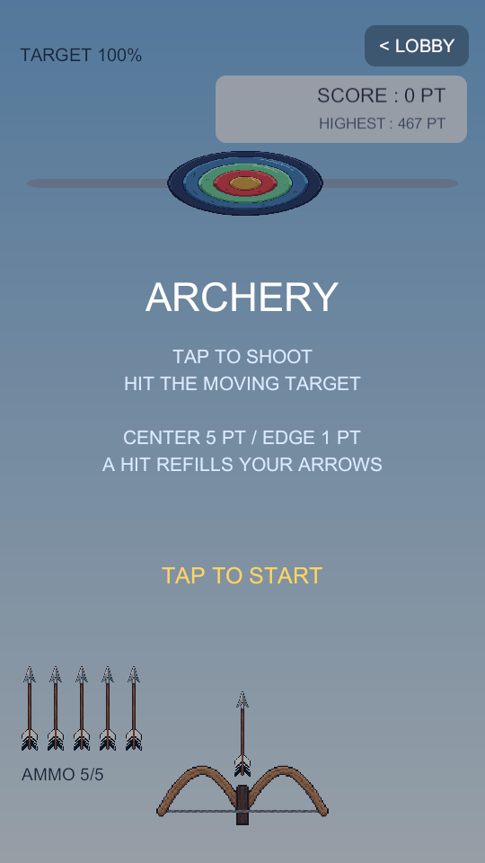
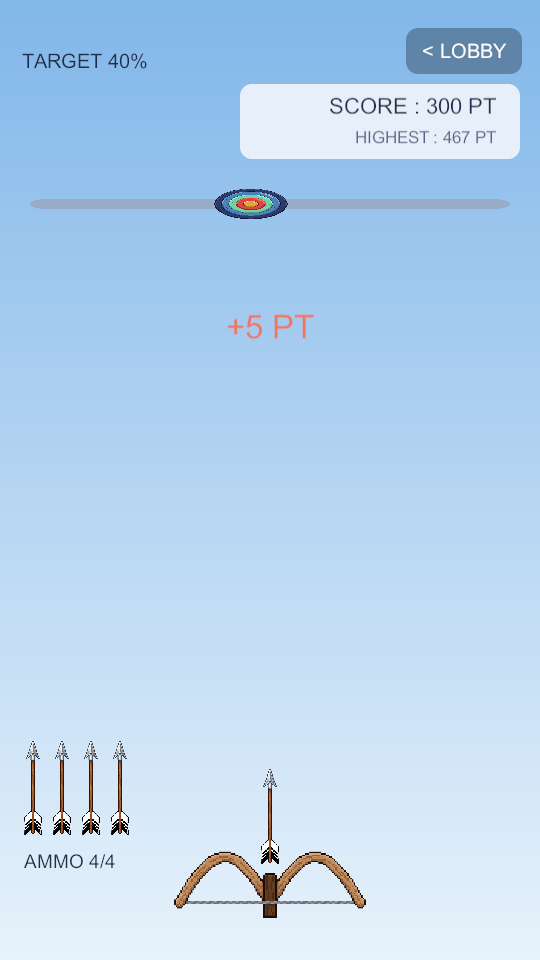

<title>활쏘기 추가</title>
<meta charset="utf-8">
<style>
  :root{
    --bg:#f7f6f3; --card:#fff; --ink:#1c1b19; --muted:#6b6862;
    --line:#e3e0da; --accent:#c2410c; --ok:#15803d; --warn:#b45309;
  }
  @media (prefers-color-scheme:dark){:root:not([data-theme="light"]){
    --bg:#16151a; --card:#1f1e24; --ink:#eceaf0; --muted:#a3a0ab;
    --line:#33313b; --accent:#fb923c; --ok:#4ade80; --warn:#fbbf24;
  }}
  :root[data-theme="dark"]{
    --bg:#16151a; --card:#1f1e24; --ink:#eceaf0; --muted:#a3a0ab;
    --line:#33313b; --accent:#fb923c; --ok:#4ade80; --warn:#fbbf24;
  }
  body{background:var(--bg);color:var(--ink);font:16px/1.65 "Malgun Gothic","Segoe UI",system-ui,sans-serif;
       margin:0;padding:40px 20px 80px}
  main{max-width:880px;margin:0 auto}
  h1{font-size:28px;line-height:1.3;margin:0 0 6px;letter-spacing:-.02em}
  .sub{color:var(--muted);margin:0 0 36px;font-size:14px}
  h2{font-size:19px;margin:44px 0 14px;padding-bottom:8px;border-bottom:2px solid var(--line)}
  h3{font-size:15px;margin:26px 0 8px;color:var(--accent)}
  section{background:var(--card);border:1px solid var(--line);border-radius:12px;padding:4px 24px 24px;margin-bottom:8px}
  .tw{overflow-x:auto;margin:14px 0}
  table{border-collapse:collapse;width:100%;font-size:14px;min-width:460px}
  th,td{padding:7px 10px;text-align:left;border-bottom:1px solid var(--line);vertical-align:top}
  th{font-weight:600;color:var(--muted);font-size:12.5px;text-transform:uppercase;letter-spacing:.04em}
  td.n{text-align:right;font-variant-numeric:tabular-nums}
  tr:last-child td{border-bottom:none}
  code{background:var(--bg);border:1px solid var(--line);border-radius:4px;padding:1px 5px;font-size:13px;
       font-family:Consolas,"Cascadia Mono",monospace}
  ul{padding-left:20px} li{margin:6px 0}
  ol{padding-left:22px} ol li{margin:8px 0}
  .tag{display:inline-block;font-size:12px;padding:2px 9px;border-radius:99px;border:1px solid currentColor;
       font-weight:600;vertical-align:middle}
  .ok{color:var(--ok)} .warn{color:var(--warn)} .bad{color:var(--accent)}
  .note{border-left:3px solid var(--warn);background:var(--bg);padding:12px 16px;border-radius:0 8px 8px 0;margin:16px 0}
  .note p{margin:6px 0}
  .lead{font-size:17px}
  .flow{background:var(--bg);border:1px solid var(--line);border-radius:8px;padding:14px 16px;margin:16px 0;
        font-family:Consolas,"Cascadia Mono",monospace;font-size:13px;line-height:1.7;overflow-x:auto;white-space:pre}
  figure{margin:0}
  .pair{display:flex;gap:14px;flex-wrap:wrap;margin:18px 0}
  .pair figure{flex:1 1 200px;min-width:170px}
  .pair img{width:100%;display:block;border:1px solid var(--line);border-radius:8px;background:var(--bg)}
  .pair figcaption{font-size:12.5px;color:var(--muted);margin-top:8px;text-align:center;line-height:1.5}
  .num{display:inline-block;min-width:1.7em;color:var(--accent);font-weight:700}
</style>

<main>
<h1>미니게임 2번 &mdash; 활쏘기!</h1>
<p class="sub">심심할 때 하는 게임 &middot; 2026-09-07 &middot; <code>@활쏘기 기획서.png</code> 구현 &middot; 배치 모드 검증 완료</p>

<section>
<h2>한 줄 요약</h2>
<p class="lead">기획서대로 <strong>활쏘기를 만들어 로비 2번 칸에 붙였습니다.</strong>
그림은 말씀하신 대로 전부 <strong>임시(코드로 그린 것)</strong>이고,
난이도는 <strong>점프점프와 똑같이 CSV 표 한 장</strong>으로 굴러갑니다.
컴파일 오류 0건, 자동 플레이테스트 정상, 화면 4장 캡처했습니다.</p>

<div class="tw"><table>
<tr><th>기획서 항목</th><th>구현</th></tr>
<tr><td>활 고정, 터치 시 화살 발사</td><td><span class="tag ok">완료</span> 화면 아래 가운데 고정, 화살은 수직</td></tr>
<tr><td>과녁 좌우 이동</td><td><span class="tag ok">완료</span> 벽에 닿으면 반사, 속도는 표에서</td></tr>
<tr><td>가운데 5점 / 가장자리 1점</td><td><span class="tag ok">완료</span> 링 5개, 바깥으로 1점씩 감소</td></tr>
<tr><td>화살 5발, 쏘면 1 감소</td><td><span class="tag ok">완료</span></td></tr>
<tr><td>맞히면 화살이 최대치로 회복</td><td><span class="tag ok">완료</span></td></tr>
<tr><td>맞힐 때마다 과녁 1% 축소</td><td><span class="tag ok">완료</span> 하한 35% (표에서 조절)</td></tr>
<tr><td>SCORE / HIGHEST 표시</td><td><span class="tag ok">완료</span> 최고 점수는 폰에 저장됩니다</td></tr>
<tr><td>미니멀 2D, 파스텔 톤</td><td><span class="tag warn">임시</span> 그림은 나중에 교체</td></tr>
</table></div>

<p><strong>게임 오버는 화살이 다 떨어졌을 때</strong>입니다. 맞히면 화살이 가득 차니까,
결국 <b>연속으로 5발을 빗나가면 끝</b>이라는 규칙이 됩니다.</p>
</section>

<section>
<h2>지금 화면 <span class="tag ok">배치 모드 캡처</span></h2>
<p>플레이 모드에 들어가지 않고 뽑은 실제 화면입니다.
<code>JumpJump\JumpJump_Preview\</code> 에 있습니다.</p>

<div class="pair">
<figure>
  <figcaption><strong>시작</strong><br>규칙 안내 + LOBBY 버튼</figcaption></figure>
<figure>
  <figcaption><strong>플레이</strong><br>6발 맞혀서 과녁 94%</figcaption></figure>
<figure>
  <figcaption><strong>후반</strong><br>60발 · 과녁 40% · 화살 4발</figcaption></figure>
<figure>
  <figcaption><strong>결과</strong><br>점수 · 명중률 · 최고 점수</figcaption></figure>
</div>

<p>로비에도 들어갔습니다. <strong>2번 칸</strong>이 열려 있습니다.</p>

<div class="pair">
<figure>
  <figcaption><strong>로비</strong> &mdash; 1번 점프점프, 2번 활쏘기. 나머지 7칸은 잠김 그대로입니다</figcaption></figure>
</div>
</section>

<section>
<h2>난이도 표 &mdash; <code>archery.csv</code></h2>
<p class="lead">&ldquo;테이블이 추가될 예정&rdquo;이라고 하셔서,
<strong>표를 나중에 늘리는 것을 전제로 만들었습니다.</strong>
작업 폴더에 <code>archery.csv</code> 를 새로 넣어 두었습니다. 엑셀로 열어 고치고 저장하면 끝입니다.</p>

<p>점프점프의 <code>config.csv</code> 와 같은 방식이고, <b>구간을 가르는 기준만 다릅니다.</b>
점프점프는 높이(m)였고, 활쏘기는 <strong>누적 명중 수</strong>입니다.</p>

<div class="tw"><table>
<tr><th>열</th><th>뜻</th><th>지금 값</th></tr>
<tr><td><code>Hits_Max</code></td><td><strong>이 명중 수까지 이 구간</strong> (유일한 필수 열)</td><td>4 → 9 → 19 → &hellip; → 9999</td></tr>
<tr><td><code>Target_Speed</code></td><td>과녁 좌우 이동 속도</td><td>1.6 → 6.8</td></tr>
<tr><td><code>Shrink_Percent</code></td><td>명중 1회당 과녁이 작아지는 %</td><td>1 (기획서대로)</td></tr>
<tr><td><code>Size_Min_Percent</code></td><td>과녁 크기 하한 %</td><td>35</td></tr>
<tr><td><code>Ammo_Max</code></td><td>화살 최대 수</td><td>5 → 4 → 3</td></tr>
<tr><td><code>Arrow_Speed</code></td><td>화살 속도</td><td>16 → 20</td></tr>
</table></div>

<h3>표를 늘릴 때를 대비해 넣어 둔 것</h3>
<ul>
<li><strong>열은 이름으로 찾습니다.</strong> 순서를 바꾸거나, 메모용 열을 사이에 끼워 넣어도 됩니다.</li>
<li><strong>빈 칸은 바로 위 줄 값을 이어받습니다.</strong> 바뀌는 칸만 채워도 표가 완성됩니다.</li>
<li><strong>모르는 열은 무시합니다.</strong> 필요한 열이 없으면 기본값으로 채웁니다.</li>
<li>대소문자 / 띄어쓰기 / 밑줄 차이를 무시합니다. 엑셀의 BOM &middot; 줄바꿈 &middot; 따옴표도 처리합니다.</li>
<li>새 수치(예: 바람 세기)를 넣고 싶으시면 <b>열을 추가해서 주시면 됩니다.</b>
    코드는 세 줄만 고치면 되도록 정리해 두었습니다 (Archery README 에 절차를 적어 두었습니다).</li>
</ul>

<div class="note">
<p><strong>수치는 코드에 박혀 있지 않습니다.</strong> 과녁 속도 &middot; 화살 수 &middot; 축소율을 바꾸고 싶으시면
<code>D:\00.JumpJump\archery.csv</code> 만 고치시면 됩니다.
화면 배치(과녁 높이 &middot; 활 높이 &middot; 과녁 기본 크기)는
<code>Assets/Archery/ArcheryConfig.asset</code> 인스펙터에 있습니다.</p>
</div>
</section>

<section>
<h2>그림은 전부 임시입니다 <span class="tag warn">이후 교체됨</span></h2>
<div class="note">
<p><strong>이 절은 작성 당시 기준입니다.</strong> 같은 날 오후에 진짜 그림을 넣어 주셔서
지금은 임시 그림을 쓰지 않습니다. 그림 교체 방법은 <code>화면수정_반영보고서.html</code> 를 보세요.</p>
</div>
<p>말씀하신 대로 임시 그림을 썼습니다. 다만 <b>파일로 만들어 두었기 때문에,
진짜 그림이 나오면 같은 이름으로 덮어쓰기만 하면 됩니다.</b></p>

<div class="tw"><table>
<tr><th>파일</th><th>무엇</th><th>덮어쓸 때 지킬 것</th></tr>
<tr><td><code>Assets/Archery/Art/Target.png</code></td><td>과녁</td>
    <td><strong>정사각형 &middot; 원이 그림을 꽉 채울 것 &middot; 피벗 한가운데</strong></td></tr>
<tr><td><code>Assets/Archery/Art/Arrow.png</code></td><td>화살</td>
    <td>위를 향하고, 피벗은 아래끝</td></tr>
<tr><td><code>Assets/Archery/Art/Bow.png</code></td><td>활</td><td>피벗은 손잡이 자리</td></tr>
<tr><td><code>Assets/Archery/Art/Sky.png</code></td><td>배경 하늘</td><td>세로 그라데이션</td></tr>
<tr><td><code>@Game_02_활쏘기.png</code> (작업 폴더)</td><td>로비 아이콘</td>
    <td>동그란 그림. <b>이미 파일이 있으면 덮어쓰지 않습니다</b></td></tr>
</table></div>

<div class="note">
<p><strong>과녁 그림만은 조건이 중요합니다.</strong> 과녁의 x 위치가 곧 명중 판정이라서,
그림 안에서 원이 치우쳐 있으면 <b>보이는 곳과 맞는 곳이 달라집니다.</b>
정사각형 캔버스에 원을 꽉 채워 주시면 됩니다.</p>
</div>

<h3>이름표는 아직 글자입니다</h3>
<p>로비 2번 칸의 &ldquo;활쏘기!&rdquo; 는 지금 <b>빈 이름표 그림 위에 글자로</b> 찍고 있습니다.
점프점프처럼 이름이 그려진 그림 <code>@Name_02_활쏘기.png</code> 를 작업 폴더에 넣어 주시면
그 그림으로 바뀝니다. (빈 이름표 그림도 이번에 같이 만들었습니다 &mdash;
앞으로 이름표가 없는 게임은 전부 이렇게 나옵니다)</p>
</section>

<section>
<h2>검증 <span class="tag ok">배치 모드</span></h2>
<p>에디터를 켜지 않고 게임 코드를 그대로 돌려서 확인했습니다.
점프점프와 같은 방식입니다 &mdash; 게임 로직이 <code>Step(경과시간, 터치했나)</code> 를 받게 되어 있어서
봇이 대신 플레이할 수 있습니다.</p>

<div class="tw"><table>
<tr><th>확인한 것</th><th>결과</th></tr>
<tr><td>컴파일</td><td><span class="tag ok">오류 0건</span></td></tr>
<tr><td>씬 4장 생성 (타이틀 / 로비 / 점프점프 / 활쏘기)</td><td><span class="tag ok">정상</span> Build Settings 순서도 정리됨</td></tr>
<tr><td><b>조준 봇</b> 120초 &mdash; 잘 쏘면 계속 이어지는가</td>
    <td><span class="tag ok">정상</span> 97발 쏴서 96발 명중, 한 번도 안 죽음, 480점</td></tr>
<tr><td>&nbsp;&nbsp;└ 과녁이 표대로 작아지는가</td><td><span class="tag ok">정상</span> 100% → 하한 35% 까지 줄고 멈춤</td></tr>
<tr><td>&nbsp;&nbsp;└ 난이도 구간이 올라가는가</td><td><span class="tag ok">정상</span> 96발 시점에 속도 5.4 / 화살 4발 구간</td></tr>
<tr><td><b>빗맞히는 봇</b> 30초 &mdash; 화살이 떨어지면 끝나는가</td>
    <td><span class="tag ok">정상</span> 7판 전부 5발 쏘고 <code>OUT OF ARROWS</code></td></tr>
<tr><td>화면 캡처</td><td><span class="tag ok">4장</span> 위의 그림들</td></tr>
</table></div>

<p>이 검증은 언제든 다시 돌릴 수 있습니다.
에디터에서 <code>Tools &gt; Archery &gt; Run Headless Playtest</code> 입니다.</p>
</section>

<section>
<h2>확인해 주실 것</h2>
<ol>
<li><strong>Unity 를 열고 <code>Tools &gt; Arcade &gt; Build All Scenes</code> → Play</strong> 를 눌러
    타이틀 → 로비 → <b>2번 칸 활쏘기</b>로 들어가 보세요.
    (점프점프의 1차 수정 5건도 아직 직접 못 보셨으니 1번 칸도 같이 봐 주시면 좋겠습니다)</li>
<li><strong>난이도가 손에 맞는지</strong> 봐 주세요. 지금 표는 제가 어림으로 잡은 값입니다.
    <b>준비 중이신 테이블이 있으면 그걸로 그대로 바꾸면 됩니다.</b></li>
<li><strong>그림을 어떤 순서로 그리실지</strong> 알려 주세요.
    과녁 → 활 → 화살 → 배경 순으로 받으면 하나씩 바로 갈아 끼울 수 있습니다.</li>
<li><strong>APK 를 새로 구울지</strong> 정해 주세요. 지금 작업 폴더의 APK 는 2026-09-06 것이라
    타이틀 &middot; 로비 &middot; 새 배경 &middot; 활쏘기가 하나도 없습니다.
    IL2CPP 라 10분 이상 걸리지만 백그라운드로 돌릴 수 있습니다.</li>
</ol>
</section>

<section>
<h2>고친 파일 <span class="tag ok">참고</span></h2>
<h3>새로 만든 것</h3>
<ul>
<li><code>D:\00.JumpJump\archery.csv</code> &mdash; 난이도 표 (여기를 고치시면 됩니다)</li>
<li><code>Assets/Archery/</code> &mdash; 게임 전부 (스크립트 7 + 에디터 도구 5 + 임시 그림 5 + 씬 1)</li>
<li><code>Assets/Archery/README.md</code> &mdash; 규칙표 &middot; CSV 열 설명 &middot; 그림 교체 조건</li>
<li><code>@Game_02_활쏘기.png</code> &mdash; 임시 로비 아이콘 (덮어쓰셔도 됩니다)</li>
</ul>
<h3>기존 파일 중 손댄 곳</h3>
<ul>
<li><code>ShellSceneBuilder.cs</code> &mdash; 활쏘기 씬을 굽고 로비 목록 &middot; Build Settings 에 등록</li>
<li><code>ShellArt.cs</code> &mdash; 이름표 그림이 없는 게임용 <b>빈 이름표</b>를 만들어 두게</li>
<li><code>JumpJumpBuild.cs</code> &mdash; APK 에 활쏘기 씬도 담기게 (한 줄)</li>
<li><code>CLAUDE.md</code> / <code>Assets/Shell/README.md</code> &mdash; 문서 갱신</li>
</ul>
<p><b>점프점프 게임 코드는 한 줄도 건드리지 않았습니다.</b>
지난번 검증해 둔 상태 그대로입니다.</p>
</section>

</main>
